⚽ Equipos de la Liga MX
Conoce a todos los clubes que participan en el torneo más emocionante de México
 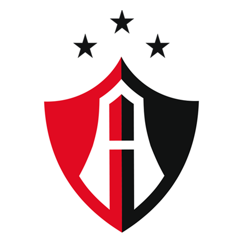
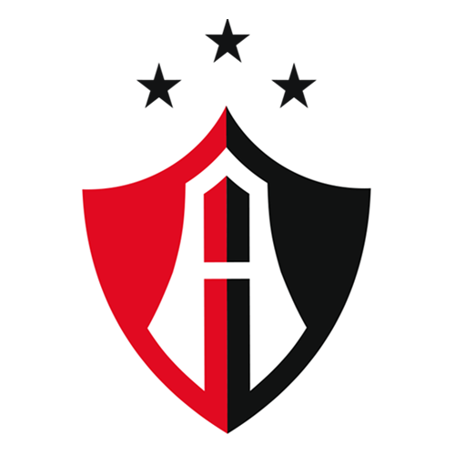


 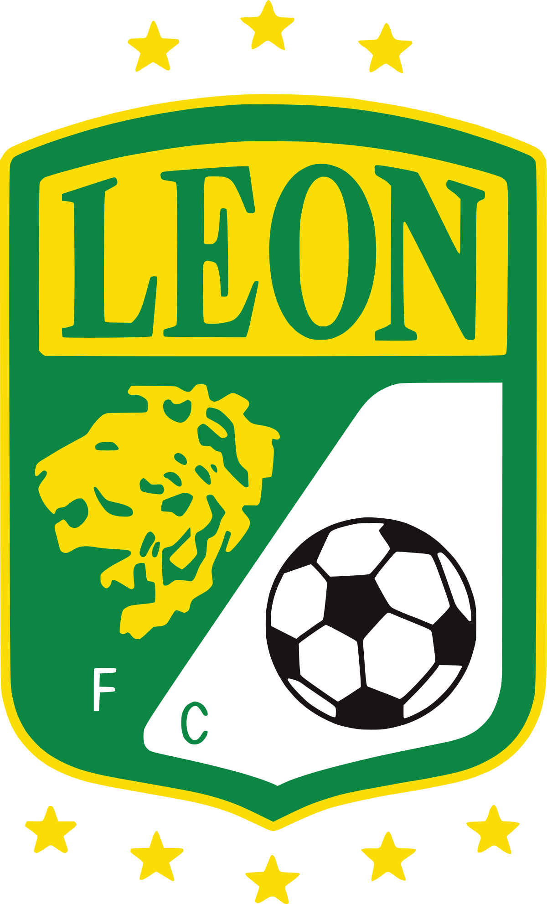
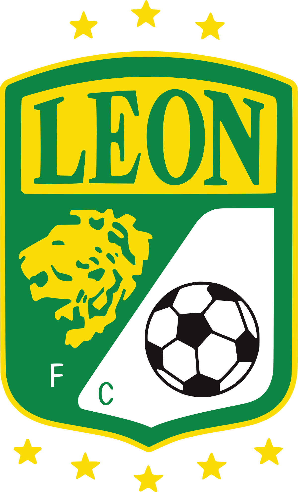

 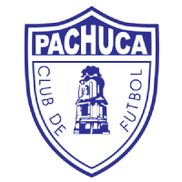
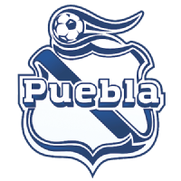
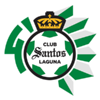
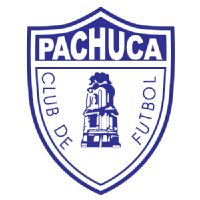
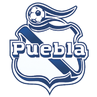
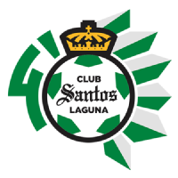
 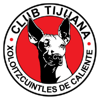
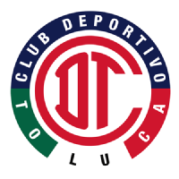
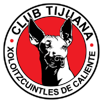
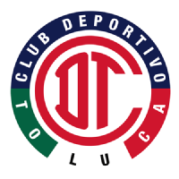
üì∞ Últimas Noticias
Mantente al día con las noticias más importantes del fútbol mexicano
Liguilla 2025
Se acerca la fase final del torneo. Conoce qué equipos están clasificando a la liguilla.
Hace 2 horasGoleadores del Torneo
Descubre quiénes lideran la tabla de goleo en este emocionante torneo.
Hace 4 horasAnálisis Estadístico
Estadísticas completas de la jornada: goles, tarjetas, posesión y más.
Hace 6 horasüéØ Informaci√≥n Destacada
Próxima Jornada
Fin de semana lleno de emociones con partidos decisivos para la clasificación.
Estadios Emblemáticos
Desde el Azteca hasta el Volcán, conoce los templos del fútbol mexicano.
App Móvil
Lleva toda la información de la Liga MX contigo a donde vayas.
üî• ¬øSab√≠as que...?
La Liga MX es considerada una de las ligas más competitivas de América.
Esta página ha sido visitada 1247 veces.